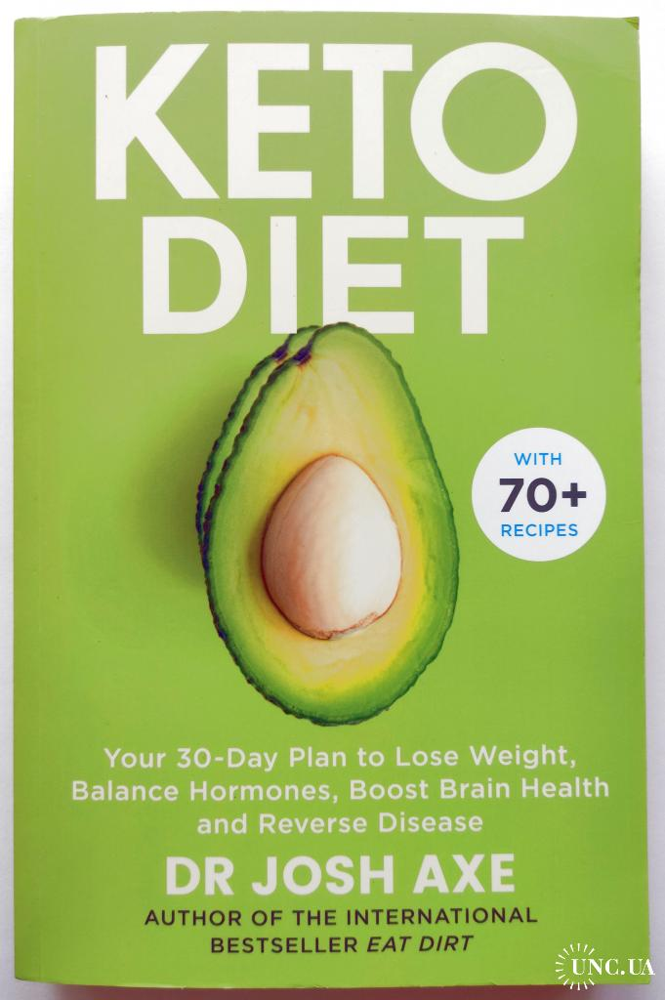

Book Review
Keto Diet: Your 30-Day Plan to Lose Weight
From the author of the national bestseller Eat Dirt, a 30-day healthy plan -- including more than 80 delicious recipes -- to burn fat, fight inflammation, and reverse disease using the keto diet.
Today, the ketogenic diet is the world's fastest growing diet, and with good reason. When practiced correctly, it has been proven to burn fat, reduce inflammation, fight cancer, balance hormones and gut bacteria, improve neurological diseases, and even increase lifespan. Unfortunately, many people remain unaware of several key factors that are crucial to the diet's success, setting them up for frustration, failure, and relapse.
In Keto Diet, bestselling author Dr. Josh Axe sets the record straight, offering thorough, step-by-step guidance to achieving lifelong health. Unlike other books on the subject, Keto Diet identifies and details five different ketogenic protocols and explains why picking the right one for your body and lifestyle is fundamental to your success.
Inside, you'll find all the tools they need to say goodbye to stubborn fat and chronic disease once and for all, including:
shopping lists
delicious recipes
exercise routines
accessible explanations of the science behind keto's powerful effects
five different keto plans and a guide to choosing the one that fits you best!